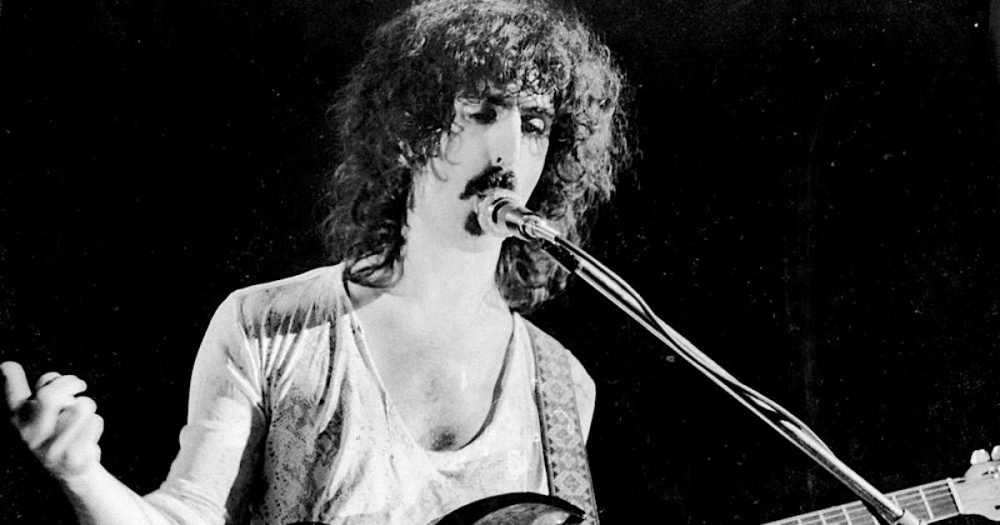

Frank Zappa Quotes
Zappa is well known for his independent thinking and outspoken persona. He does not shy away from politics and his beliefs are woven into the music he wrote.
A mind is like a parachute. It doesn't work if it is not open.
Interviewer: 'So Frank, you have long hair. Does that make you a woman?' Frank Zappa: 'You have a wooden leg. Does that make you a table?
"Information is not knowledge. Knowledge is not wisdom. Wisdom is not truth. Truth is not beauty. Beauty is not love. Love is not music. Music is THE BEST.
Without deviation from the norm, progress is not possible.
Don’t forget to vote
Jazz isn't dead. It just smells funny.
Without music to decorate it, time is just a bunch of boring production deadlines or dates by which bills must be paid.
Reality is what it is, not what you want it to be.
One size does not fit all.
Art is making something out of nothing, and selling it.
It’s better to have something to remember than anything to regret.
I never set out to be weird. It was always other people who called me weird.